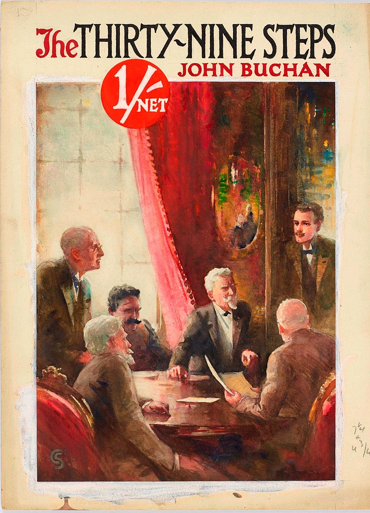

The Thirty-Nine Steps is an adventure novel by the Scottish author John Buchan. It first appeared as a serial in
Blackwood's Magazine, as by “H de V.”, in July, August and September 1915 before being published in book form in
October that year by William Blackwood and Sons, Edinburgh. It is the first of the five novels featuring Richard
Hannay, an all-action hero with a stiff upper lip and a miraculous knack for getting himself out of tricky
situations.[1][2]
The novel formed the basis for a number of successful adaptations, including several film versions and a
long-running stage play.[1] In 2003, the book was listed on the BBC's The Big Read poll of the UK's "best-loved
novels."[3]

Background
John Buchan wrote The Thirty-Nine Steps while he was ill in bed with a duodenal ulcer, an illness which remained
with him all his life. Buchan's son, William, later wrote that the name of the book originated when the author's
daughter was counting the stairs at St Cuby, a private nursing home on Cliff Promenade in Broadstairs, where Buchan
was convalescing. "There was a wooden staircase leading down to the beach. My sister, who was about six, and who had
just learnt to count properly, went down them and gleefully announced: there are 39 steps." There were actually 78,
but he halved the number to make a better title. When the original steps were later replaced, one of them, complete
with a brass plaque, was sent to Buchan.[4] They were replaced by concrete, and this set, now numbering 108, still
runs from the garden to the beach.[5]
The novel was his first "shocker", as he called it—a story combining personal and political dramas. It marked a
turning point in Buchan's literary career and introduced his adventuring hero Richard Hannay. He described a
"shocker" as an adventure where the events in the story are unlikely and the reader is only just able to believe
that they really happened.[4]
Plot Summary
In May 1914, war looms in Europe. Richard Hannay returns home to London after living in Rhodesia. One night his
neighbour, an American who claims to be in fear for his life, visits Hannay. The man appears to know of an anarchist
plot to destabilise Europe, beginning with a plan to assassinate the Greek Premier, Constantine Karolides, during
his forthcoming visit to London.
The man, named Franklin P. Scudder, is a freelance spy, and reveals that he has faked his own death. Scudder claims
to be following a ring of German spies called the Black Stone who are trying to steal British plans for the outbreak
of war. Hannay, convinced of his honesty, lets Scudder hide in his flat. Police discover the fake suicide and
suspect nothing, but Hannay finds Scudder murdered in his flat a few days later nonetheless. Feeling now part of the
plot, Hannay takes up Scudder's encoded notebook and escapes his apartment by disguising himself as the milkman one
day.
Hannay takes a train leaving from London to Galloway, in south-west Scotland, believing it sufficiently remote to
hide in until the fateful 15 June (a date noted by Scudder relevant to the anarchist's plot). Hannay lodges in a
shepherd's cottage and reads in a newspaper that the police are looking for him in Scotland, suspecting him of
Scudder's murder. Hannay boards a local train heading east, but jumps off between stations to confuse his trail. He
eventually finds an inn where he stays the night. He tells the innkeeper a modified version of his story, and the
man is persuaded to shelter him. While staying at the inn, Hannay cracks the cipher used in Scudder's codebook. The
next day two men arrive at the inn looking for Hannay, but the innkeeper sends them away. When they return later,
Hannay steals their car and escapes.
By this time, Hannay is being pursued by an aeroplane, and a policeman in a remote village tries to stop him as he
drives through. He decides to stay off the main roads, but not knowing the area, nearly gets into a crash. To avoid
it, he ditches the car, which falls off a cliff. The other driver, Harry Bullivant, a local landowner and
prospective politician, takes pity on him after seeing his dirty clothes and takes him home to clean up. When he
learns of Hannay's experiences in South Africa, he invites him to address an election meeting that afternoon.
Hannay's speech impresses Harry (and is far better than Harry's own), and Hannay feels able to trust him with his
story. Harry writes an introductory letter about Hannay to a relation in the Foreign Office to thank him for his
speech and help him with the plot.
Hannay leaves Harry and tries to hide in the countryside, but is spotted from the aeroplane. Soon he spots a group
of men on the ground searching for him. Miraculously, he meets a road mender out on the moor, and swaps places with
him, sending the workman home. His disguise fools his pursuers, who pass him by. On the same road he encounters an
acquaintance from London (whom he hates) named Marmaduke Jopley. He takes his clothes and drives his car several
miles away before leaving Jopley.
Now back on foot, his pursuers find Hannay, and he runs off. He finds a cottage and enters, desperate for cover, and
the occupant excitedly welcomes him. Unfortunately, the man turns out to be one of the enemy, and with his
accomplices he locks Hannay into his storage room. Fortunately, the room in which Hannay is locked is full of
bomb-making materials, which he uses to break out of the cottage. Without cover or means to escape cars or the
plane, Hannay hides on top of a building until nightfall, then runs off.
Hannay returns to and retrieves his possessions from the helpful road mender and stays for a few days to recover
from the explosion. He departs by train to meet Harry's relative at the Foreign Office, Sir Walter Bullivant. As
they discuss Scudder's notes, Sir Walter receives a phone call to tell him that Karolides has indeed been
assassinated. Sir Walter and his cohort return to London with Hannay, where they clear his name at Scotland Yard and
release him, apparently free of involvement in the plot. Hannay feels agitated and unfulfilled; he runs into
Marmaduke Jopley again and starts a fight. With the police after him again, he flees to Sir Walter's home, where he
finds him in a meeting with several officials, including the First Sea Lord. While Hannay waits for the meeting to
end, the First Sea Lord leaves. They briefly make eye contact and Hannay is certain the man is one of his pursuers
in disguise. They call the real First Sea Lord's home, where a servant informs them he is asleep in bed.
Desperate to stop the imposter from escaping with their secrets, Hannay and the officials comb Scudder's codebook.
They reason that the phrase "the thirty-nine steps," along with the date and tidal information (high tide at 10:17
PM) must indicate the location of the escape point for the conspirators. With the help of a coast guardsman, they
set off for a quiet middle-class location by the sea. They find an area with several sets of steps, one of them
having 39, and an anchored yacht called "Ariadne". They approach the yacht posing as fishermen and discover the
officer on board is German. Hannay watches three men in a villa who match the description of his pursuers, but their
normal behaviour causes him to doubt their involvement.
Despite his doubts, he confronts the men. A subtle gesture assures him that they are his pursuers, and his men enter
to arrest them. Although one escapes, bound for the boat, Hannay reveals they have already taken the boat, and all
three men are arrested. The United Kingdom enters World War I three weeks later, her secrets intact, with Hannay
commissioned captain.
Literary significance and criticism
The Thirty-Nine Steps is one of the earliest examples of the '"man-on-the-run" thriller archetype subsequently
adopted by film makers as a much-used plot device. In The Thirty-Nine Steps, Buchan holds up Richard Hannay as an
example to his readers of an ordinary man who puts his country's interests before his own safety. The story was a
great success with the men in the First World War trenches. One soldier wrote to Buchan, "The story is greatly
appreciated in the midst of mud and rain and shells, and all that could make trench life depressing."
Hannay continued his adventures in four subsequent books. Two were set during the war, when he continued his
undercover work against the Germans and their allies the Turks in Greenmantle (1916) and Mr Standfast (1919). The
other two stories, The Three Hostages (1924) and The Island of Sheep (1936) were set in the postwar period, when
Hannay's opponents were criminal gangs.